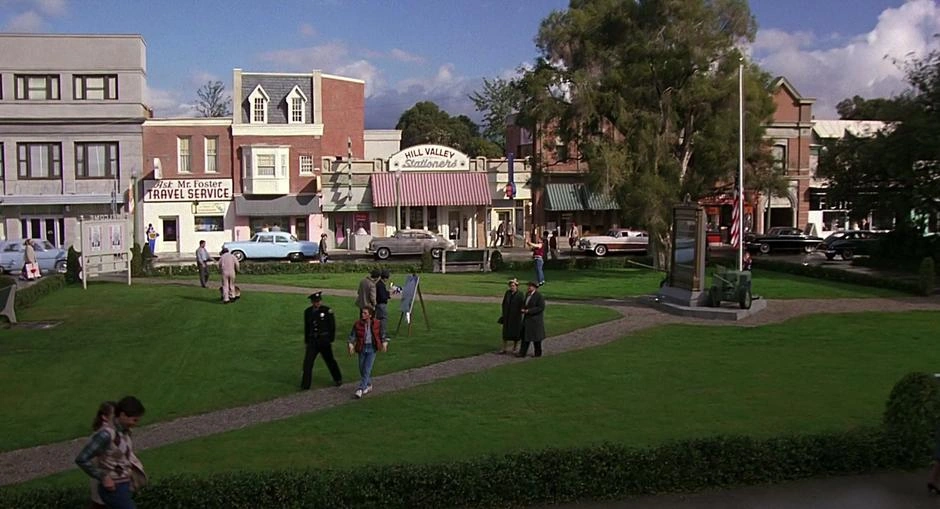

It does not exist in real life, but it was mainly filmed on the Universal Studios backlot in California for the iconic movie Back to the Future.
It is one of my favorite cities because that is where the memorable events of the movie with Dr. Brown and Marty McFly took place in each of the three films. I would love to visit that place.
